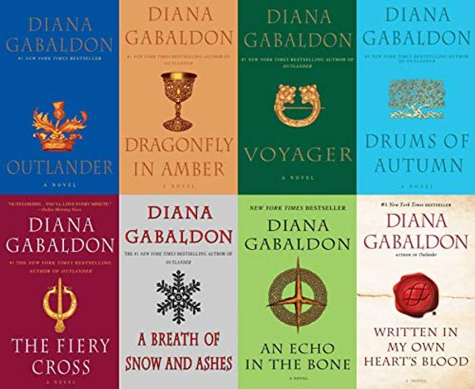

Outlander
Outlander is a book series by Diana Gabaldon as well as a TV series on Starz, entering its sixth season. I fell in love with the series the first time I watched it. While I waited for new episodes to be released, I began to read the books. The books are massive and I just started the 8th book recently.
Book Series
The book series currently has 8 books published with the much anticipated 9th book in the series releasing in November 2021. There are also several companion novels and novellas. I read one of the campanion pieces, which was a collection of side stories, before I had finished reading the novels, and the way these companion pieces complement the full work is amazing.
TV Series
The series does a fairly good job of following the books and hits all the major plot points. Diana is a consultant on the show, and any changes to the plot are with her approval. It is a great mix of period drama and historical fiction, weaving the fictional story with real historcal events, as well as bringing in an element of fantasy: time travel.